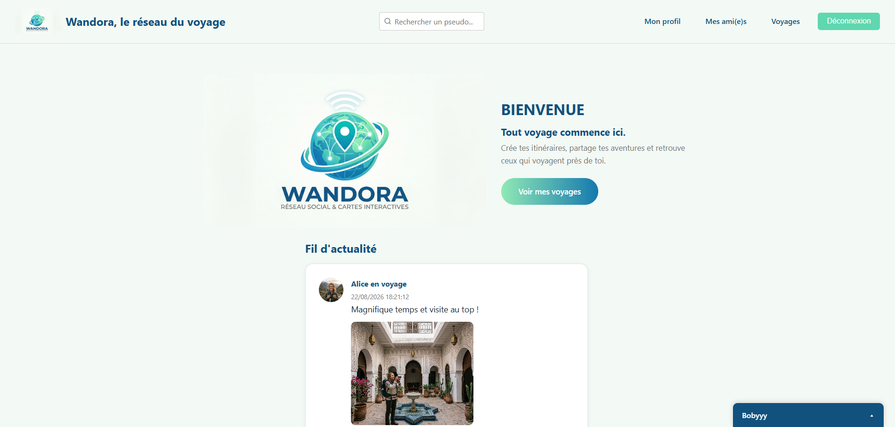

Cas fictif · en cours
Assistant IA de tri SAV
Tri automatique des demandes d'un service après-vente par une IA 100 % locale, avec garde-fous, brouillons de réponse et évaluation chiffrée de la qualité.
Développeuse full stack · orientée back-end & IA
Orientée back-end et IA (Python, Node.js), je maîtrise aussi le front avec React. Je transforme un besoin en application complète : API, base de données, sécurité, tests et intelligence artificielle maîtrisée.
// projets
Des projets personnels, du cahier des charges aux tests : certains partent d'un cas d'usage fictif, d'autres sont des outils que j'utilise moi-même. Chacun couvre l'interface, l'API, les données et la sécurité.
Cas fictif · en cours
Tri automatique des demandes d'un service après-vente par une IA 100 % locale, avec garde-fous, brouillons de réponse et évaluation chiffrée de la qualité.

Cas fictif · agence imaginaire
Site et back-office d'une agence immobilière : annonces rédigées par l'IA, chat client limité aux biens publiés et espace agent sécurisé.

Outil perso · révisions
Second cerveau pour apprendre : notes reliées, import de PDF, quiz, et un assistant IA capable de chercher et lire tous les cours.

Projet personnel
Réseau social pour voyageurs : carte interactive, itinéraires et albums de voyage, fil d'actualité, amis et messagerie.

Prototype V1
Application d'entraide communale sécurisée par conception : inscriptions validées par la mairie, aucune coordonnée affichée, modération et journal d'actions.

Outil perso · quotidien
Application web de gestion destinée aux développeurs pour centraliser tâches, projets, rendez-vous et notes au quotidien.
Ce ne sont que mes principaux projets. J'en ai réalisé d'autres et j'en construis régulièrement de nouveaux : tout mon code est visible sur GitHub.
Voir tous mes projets sur GitHub ↗// compétences
Les technologies que j'ai utilisées dans mes projets, classées par domaine.
APIs REST sécurisées
LLM intégrés avec garde-fous
Fiabilité et maintenabilité
Interfaces modernes et responsives
// approche
Quatre principes que j'applique à chaque projet.
Je cadre le projet avant de coder : cahier des charges, règles métier et critères de validation.
Authentification, droits par rôle, protection CSRF et données personnelles pensés dès le départ.
Des tests automatisés sur les règles critiques, côté API comme côté interface.
Je garde le contrôle sur l'IA : garde-fous écrits en code, validation humaine et résultats mesurés sur des jeux de test annotés.
// parcours
Après plusieurs années dans le domaine administratif, j'ai choisi de me reconvertir vers le développement, un métier qui allie logique, créativité et résolution de problèmes concrets.
Aujourd'hui développeuse full stack orientée back-end et IA, je travaille principalement avec Python et Node.js, et je conçois aussi les interfaces avec React. Ma démarche reste la même sur chaque projet : comprendre un besoin, concevoir une solution, développer, tester et améliorer.
Curieuse, rigoureuse et persévérante, j'aime comprendre en profondeur les outils que j'utilise.
Un projet, une équipe, une opportunité ? Écrivez-moi, je réponds avec plaisir.
Envoyer un e-mail →